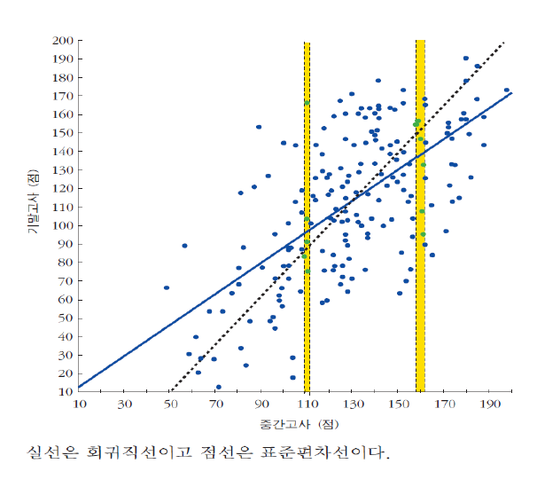

5강. 회귀분석 (1)
지난 강의 요약
- 하나의 변수에 대한 분포가 아니라 두 변수 사이의 상호관계를 고려한 분포를 결합분포라고 하며, 두 변수의 결합분포를 나타내기 위해 한 변수를 x축에, 다른 변수를 y축에 표시하여 점으로 나타낸 것을 산포도(scatter plot)이라고 한다.
- 평균과 분산이 동일한 두 변수가 존재하더라도 두 변수 간의 관계는 서로 다를 수 있다.
- 두 변수 간의 관계를 요약한 대표적인 수치는 두 변수 간 선형관계를 나타내는 공분산(covariance)이다.
- 공분산은 자료의 단위에 의존하기 때문에, 서로 다른 선형관계 간의 비교가 어렵다.
- 공분산의 단위를 제거하기 위해 두 변수 간 공분산을 각 변수의 표준편차로 나누어 −1~1사이의 값을 갖도록 조정한 통계량을 상관계수라 한다.
지난 강의 요약
- 두 변수 간 관계가 음(−)의 상관관계를 가질 경우 −1에 가까운 값을, 정(+)의 상관관계를 가질 경우 +1에 가까운 값이 나타나며, 두 변수 간 선형관계가 존재하지 않을 경우 0에 가까운 값이 나타난다.
- 상관계수는 두 변수 간 선형관계만을 수치화하기 때문에 선형관계가 아닌 비선형 관계는 나타낼 수 없다.
- 상관계수는 이상치에 민감하다.
- 평균이나 비율로 계산한 상관계수는 이미 변수의 편차가 소거된 상태이기 때문에, 실제 두 변수 간의 선형관계를 왜곡할 여지가 있다.
- 상관관계는 두 변수 간의 선형의 연관성(association)만 나타낼 뿐이며, 인과관계(causality)는 아니다.
회귀분석의 의미
- 평균 키: 167.5cm
- 평균 몸무게: 63.5kg
→ 다른 정보가 없을 때 임의로 한 개인을 선택할 경우 몸무게는 얼마일 것으로 추정할 수 있는가?
: 다른 정보가 없으므로 전체 평균인 63.5kg 수준일 것
회귀분석의 의미
- 평균 키: 167.5cm
- 평균 몸무게: 63.5kg
→ 만약 한 개인의 키가 179.5cm라는 정보가 있다면 그 값은 어떻게 바뀔까?
회귀분석
x변수에 대응하는 y변수의 “부분집합별” 평균값을 추정하는 통계적 방법

상관계수와 회귀분석의 연계
- 평균 키: 167.5cm, 키의 표준편차: 8.5cm
- 평균 몸무게: 63.5kg, 몸무게의 표준편차: 11.9kg
- 상관계수: 0.67
→ 모든 x에 대해서 부분집합을 구하고 y의 평균을 내기 어려움
→ 만약 내가 x와 y의 상관계수를 알고 있다면 키를 고려한 몸무게의 수준을 더 정확히 추정할 수 있지 않을까?
상관계수의 의미
$$r = \frac{\dfrac{\sum(x_i - \bar{x})(y_i - \bar{y})}{n-1}} {\sqrt{\dfrac{\sum(x_i - \bar{x})^2}{n-1}} \cdot \sqrt{\dfrac{\sum(y_i - \bar{y})^2}{n-1}}}$$
$$= \frac{\sum(x_i - \bar{x})(y_i - \bar{y})} {\sqrt{\sum(x_i - \bar{x})^2} \cdot \sqrt{\sum(y_i - \bar{y})^2}} \;=\; \frac{Cov_{xy}}{SD_x \cdot SD_y}$$
X가 평균에서 벗어난 정도(편차)의 표준편차 단위 환산 = X가 1표준편차 단위 변화할 때
Y가 평균에서 벗어난 정도(편차)의 표준편차 단위 환산 = Y는 표준편차 단위로 얼마나 변화할까?
→ 그 변화에 대한 평균값 (그 반대도 성립)
상관계수의 의미
- 평균 키: 167.5cm, 키의 표준편차: 8.5cm
- 평균 몸무게: 63.5kg, 몸무게의 표준편차: 11.9kg
- 상관계수: 0.67
→ 키가 8.5cm 증가할 경우 몸무게는 얼마나 증가할까?
: 키가 1표준편차(1*8.5cm) 클 경우
몸무게는 평균적으로 0.67표준편차(0.67*11.9kg) 클 것
상관계수를 활용한 회귀직선의 기울기 도출
x변수에 대응하는 y변수의 평균값을 추정하는 통계적 방법
분포를
하나의 직선으로 근사
회귀직선의 기울기
$= r * \dfrac{SD_y}{SD_x}$
→ 상관계수를 y의 단위로 변환하는 것
→ y= a+(r*SDy/SDx)*X
회귀의 표준오차 (standard error)
추정오차(estimation error) = 잔차(residual) = 실제값 − 추정치
표준오차(standard error): 잔차 제곱의 평균에 제곱근을 취한 것 (Root Mean Squared Error, RMSE)
→ 표준오차가 작을수록 회귀직선이 자료를 잘 요약
$$SE = \sqrt{\dfrac{\sum(y_i - \hat{y}_i)^2}{n-2}}$$
자유도가 2만큼 줄어드는 이유
: 추정치 계산 시 회귀직선의 기울기와 절편을 통계량으로 사용하므로
회귀분석의 기울기와 절편의 추정: 최소제곱법
회귀직선의 기울기와 절편을 추정하기 위한 방법으로서
산포도 상의 점들을 지나는 수많은 직선 중 RMSE로 측정된 표준오차(잔차제곱합의 평균 제곱근)를 최소화하는 직선을 찾는 것
회귀분석의 기울기와 절편의 추정: 최소제곱법
회귀직선의 기울기와 절편을 추정하기 위한 방법으로서
산포도 상의 점들을 지나는 수많은 직선 중 RMSE로 측정된 표준오차(잔차제곱합의 평균 제곱근)를 최소화하는 직선을 찾는 것
$e_i = Y_i - b_0 - b_1 X_i$
$\sum e_i^{\,2} = \sum (Y_i - b_0 - b_1 X_i)^2$
⟶ 이 값을 최소화하는 모수 추정량 $b_0$, $b_1$ = 최소제곱추정량
$$SE = \sqrt{\dfrac{\sum(y_i - \hat{y}_i)^2}{n-2}}$$
표준오차의 최소화 = 잔차제곱합의 최소화
회귀분석의 기울기와 절편의 추정: 최소제곱법
회귀직선의 기울기와 절편을 추정하기 위한 방법으로서
산포도 상의 점들을 지나는 수많은 직선 중 RMSE로 측정된 표준오차(잔차제곱합의 평균 제곱근)를 최소화하는 직선을 찾는 것
$e_i = Y_i - b_0 - b_1 X_i$
$\sum e_i^{\,2} = \sum (Y_i - b_0 - b_1 X_i)^2$
⟶ 이 값을 최소화하는 모수 추정량 $b_0$, $b_1$ = 최소제곱추정량
$\dfrac{\partial \sum e_i^{\,2}}{\partial b_0} = -2\sum (Y_i - b_0 - b_1 X_i) \;\; = 0$
$\dfrac{\partial \sum e_i^{\,2}}{\partial b_1} = -2\sum (Y_i - b_0 - b_1 X_i)X_i \;\; = 0$
$$b_0 = \bar{Y} - b_1 \bar{X}$$
$$b_1 = \frac{\sum(X_i - \bar{X})(Y_i - \bar{Y})}{\sum(X_i - \bar{X})^2}$$
회귀분석의 기울기와 절편의 추정: 최소제곱법
회귀직선의 기울기와 절편을 추정하기 위한 방법으로서
산포도 상의 점들을 지나는 수많은 직선 중 RMSE로 측정된 표준오차(잔차제곱합의 평균 제곱근)를 최소화하는 직선을 찾는 것
$b_1 = \dfrac{\sum(X_i - \bar{X})(Y_i - \bar{Y})}{\sum(X_i - \bar{X})^2} \;=\; \dfrac{\sum(X_i - \bar{X})(Y_i - \bar{Y})} {\sqrt{\sum(X_i - \bar{X})^2} \cdot \sqrt{\sum(Y_i - \bar{Y})^2}} \times \dfrac{\sqrt{\sum(Y_i - \bar{Y})^2}}{\sqrt{\sum(X_i - \bar{X})^2}}$
$= r \times \dfrac{SD_y}{SD_x}$
X의 1표준편차 변화에 따른
y의 평균 변화량
$= \dfrac{\dfrac{\sum(x_i - \bar{x})(y_i - \bar{y})}{n-1}}
{\sqrt{\dfrac{\sum(x_i - \bar{x})^2}{n-1}}}
\;\times\; \dfrac{1}{\sqrt{\dfrac{\sum(x_i - \bar{x})^2}{n-1}}}$
X를 곱해주면
X값의 표준편차 단위로 X를 변환시키는 것과 동일
회귀효과
평범(평균)으로의 회귀(regression to mediocrity (mean)): 결국엔 평균으로 모인다.

$\dfrac{SD_y}{SD_x}$
직선 위의 점들은 평균에서 x가 1*X표준편차 떨어져 있을 경우, y도 1*Y표준편차 떨어져 있음
$r * \dfrac{SD_y}{SD_x}$
실제 회귀직선은 평균에서 x가 1*X표준편차 떨어져 있을 경우, y는 r*1*Y표준편차 떨어져 있음
상관계수는 $-1 \le r \le +1$ 이므로
- 중간고사에서 평균보다 높은 점수를 받은 학생은 기말고사에서 표준단위 증가보다 못미치게 증가했고,
- 중간고사에서 평균보다 낮은 점수를 받은 학생은 기말고사에서 표준단위 증가보다 더 크게 증가함
→ 하나의 극단적인 값은 실력과 더불어 운이 작용
→ 운은 확률적이기 때문에 다음번에 나타나지 않을 가능성이 높음
회귀분석의 절차
- 문제제기: 회귀분석으로 해결가능한 질문 제시
- 모형설정:
이론적 토대에 기반 → 두 변수 사이의 선형관계로 가설 설정
$Y_i = \beta_0 + \beta_1 X_i + \varepsilon_i$
$\beta_0, \beta_1$ = 회귀모수(계수). (알려지지 않은) 상수
$\varepsilon_i$ = 오차. 확률변수 - 자료수집 및 모수 추정:
주어진 자료를 활용하여 적절한 추정법(예. 최소제곱법)으로 모수($\beta_0, \beta_1, \varepsilon_i$)를 추정
$Y_i = b_0 + b_1 X_i + e_i$
$b_0, b_1$ = 회귀모수의 추정량. 확률변수
$e_i$ = 잔차. 확률변수 - 모형 설명력 및 모수 추정량에 대한 유의성 검정: 모수 추정량의 표준오차, 추정 통계량, 유의성 검정을 위한 분포의 결정
- 모형 가정에 대한 검정: 회귀분석의 사후검정 (7가지 가정에 대한 준수여부 판단)
- 모형 해석 및 결론 도출
오늘 강의 요약
- 산포도 상에서 두 변수 x, y의 관계가 대략적인 선형관계를 따를 경우, x의 변화를 통해 y의 변화량을 추정해볼 수 있다.
- x에 대응하는 y의 부분집합별 평균을 추정하는 직선을 찾는 통계적 방법을 회귀분석이라 한다.
- 두 변수 x, y 간의 상관계수를 알고 있을 경우, 회귀직선의 기울기는 r×(SDy/SDx)와 같다.
- 회귀(regression)는 극단적인 값도 평균으로 돌아가는 성질이 있기 때문에 붙여진 이름이다.
- 회귀직선 위의 점은 x에 대응하는 y의 평균에 대한 추정치이며, 이 값과 실제 관측값 간의 차이를 추정오차라 한다.
- 추정오차의 표준적인 값을 구하기 위해 추정오차 제곱의 평균값에 제곱근을 씌운 것을 표준오차라 한다.
- 두 변수의 평균을 지나는 무수히 많은 직선 중 표준오차를 최소화하는 직선의 기울기와 절편을 찾는 추정방법을 최소제곱법이라고 하며, 이 때 구한 기울기는 상관계수와 두 변수의 표준편차로 구한 기울기와 같다.
Q & A
권규상 Kyusang Kwon
kyusang.kwon@chungbuk.ac.kr
<부록> 회귀계수의 유도
$\dfrac{\partial \sum e_i^{\,2}}{\partial b_0} = -2\sum (Y_i - b_0 - b_1 X_i) \;\; = 0$
$\dfrac{\partial \sum e_i^{\,2}}{\partial b_1} = -2\sum (Y_i - b_0 - b_1 X_i)X_i \;\; = 0$
$$b_0 = \bar{Y} - b_1 \bar{X}$$
$$b_1 = \frac{\sum(X_i - \bar{X})(Y_i - \bar{Y})}{\sum(X_i - \bar{X})^2}$$